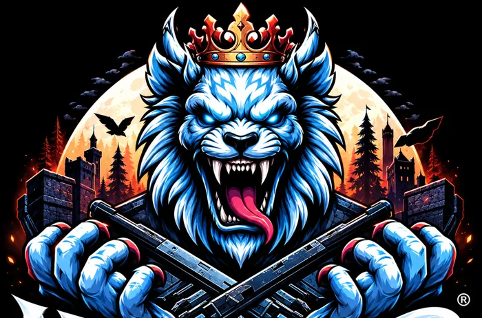

Une nouvelle histoire
commence à Neverland
Un univers vivant où chaque rencontre, chaque choix et chaque personnage laisse sa trace. Nous cherchons dès maintenant les joueurs et le staff qui écriront cette prochaine aventure avec nous.

Une aventure qui se construit ensemble
Notre objectif est de réunir une communauté active et de préparer une nouvelle étape pour le serveur.
Un univers à explorer, des objectifs à partager et une expérience pensée pour évoluer avec sa communauté.
Échangez, participez et suivez les nouveautés directement depuis notre Discord.
Des personnes motivées pour animer, accompagner et faire vivre le serveur au quotidien.
Nous recherchons du monde
Votre présence aide à faire grandir la communauté avant la réouverture.
Des joueurs
Rejoins la communauté et participe à la préparation de la prochaine aventure.
- Communauté passionnée
- Actualités et échanges réguliers
- Préparation de la réouverture
- Une aventure à construire ensemble
Du staff
Nous recherchons des profils sérieux, motivés et disponibles.
- Modération
- Animation et événements
- Support et aide communautaire
- Motivation pour le projet
Règlement
Quelques règles simples pour conserver une communauté saine et agréable.
Respect et comportement
Le respect entre joueurs est obligatoire, dans le jeu comme en dehors — insultes, menaces et comportements toxiques sont interdits. Les décisions du staff doivent être respectées ; en cas de désaccord, un recours peut être fait dans un cadre approprié. Toute discrimination entraîne une expulsion immédiate.
Roleplay
Restez dans l'immersion : les discussions hors personnage (OOC) doivent être réservées aux canaux prévus à cet effet. Le powergaming (capacités irréalistes) et le metagaming (informations obtenues hors RP) sont interdits. Un personnage mort ne peut pas revenir immédiatement se venger sur la scène (no revenge kill).
Conduite en jeu
Respectez le code de la route, sauf poursuite ou situation exceptionnelle liée au RP. Les armes s'utilisent de manière réaliste — s'en balader en permanence ou tirer sans raison sera sanctionné. Tuer un joueur sans raison RP valable (RDM) est interdit.
Crimes et police
Les actions criminelles doivent être planifiées et exécutées de façon réaliste, en suivant une logique RP. Respectez le rôle des forces de l'ordre : fuir sans raison crédible ou agir de manière irréaliste face à la police est prohibé.
Sanctions
Selon la gravité, une infraction peut mener à un avertissement, une suspension temporaire ou un bannissement définitif. En cas de litige, utilisez les canaux de réclamation officiels.
Autres règles
La publicité pour d'autres serveurs sans autorisation est interdite. Les mods non autorisés sont proscrits ; cheats et hacks entraînent un bannissement immédiat.
Discord et communication
Les règles de respect s'appliquent aussi sur le Discord du serveur. Merci d'utiliser les canaux appropriés pour vos discussions RP ou OOC.
FAQ
Les réponses aux principales questions avant de rejoindre Neverland.
Quand aura lieu la réouverture ?
La réouverture est en préparation. Les informations officielles seront communiquées sur le Discord Neverland.
Comment rejoindre la communauté ?
Utilisez le bouton Discord ci-dessous pour rejoindre directement le serveur communautaire.
Le recrutement du staff est-il ouvert ?
Oui. Nous recherchons des membres actifs et motivés. Les modalités sont à retrouver sur Discord.
Comment aider le projet ?
Rejoignez le Discord, présentez-vous et échangez avec la communauté et l'équipe.
Rejoins Neverland
Joueurs, futurs membres du staff et passionnés : venez participer à la construction de la communauté avant la réouverture.
Rejoindre le Discorddiscord.gg/CB9kEdUgBq